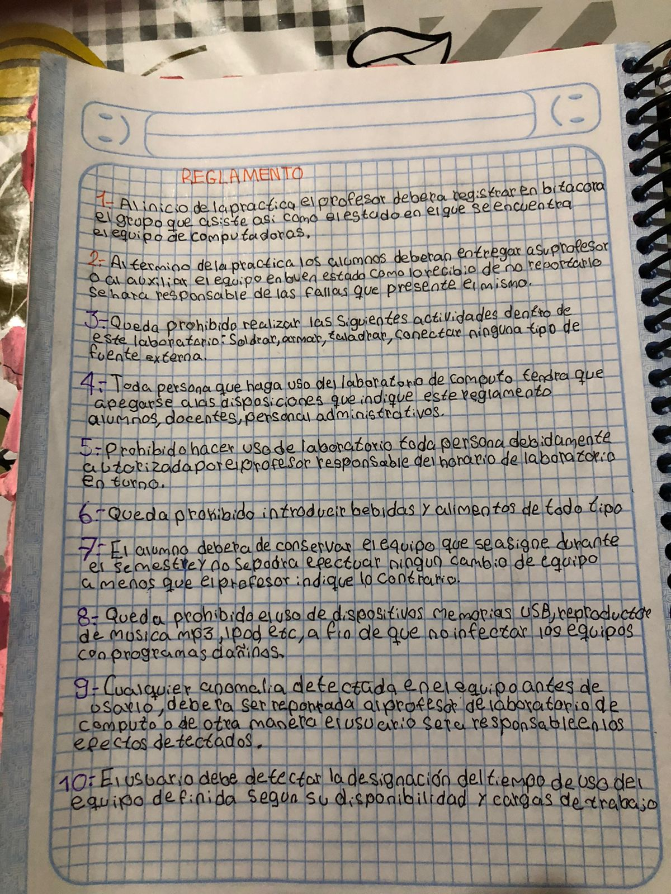
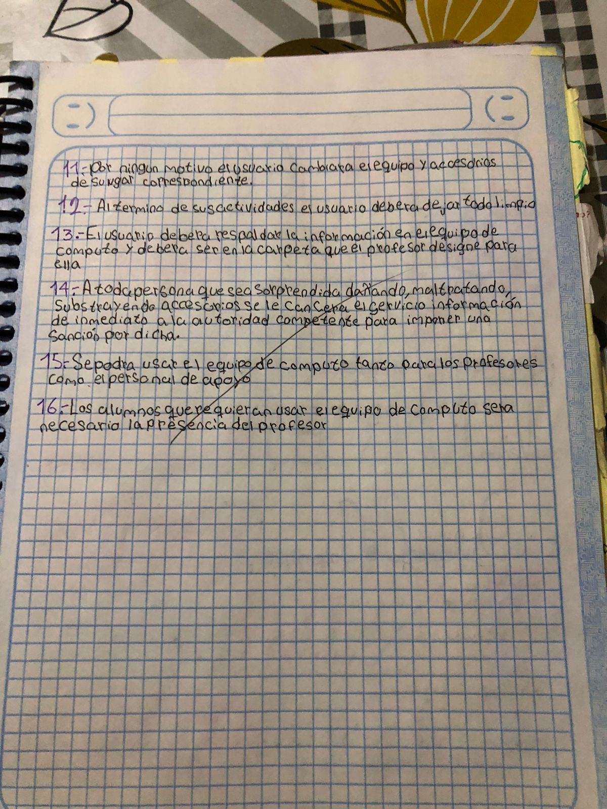

TEORIA CUADERNO


Reglamento del Laboratorio de Desarrollo de Soluciones Computacionales
El laboratorio de desarrollo de soluciones computacionales es un espacio donde los estudiantes pueden trabajar en proyectos de software y aprender habilidades prácticas. Para asegurar un ambiente seguro y productivo, se deben seguir las siguientes reglas:
- Acceso: Solo se permite el acceso a estudiantes matriculados en el curso y al personal autorizado.
- Uso de computadoras: Las computadoras deben ser utilizadas exclusivamente para actividades relacionadas con el curso. Está prohibido el uso personal o para otros fines no académicos.
- Respeto a los equipos: Se debe manejar el equipo con cuidado. Está prohibido desconectar, mover o modificar las computadoras sin permiso.
- Software: Solo se permite la instalación de software autorizado por el instructor. Está prohibido descargar e instalar programas sin aprobación.
- Datos personales: No se debe almacenar información personal o sensible en las computadoras del laboratorio. Se recomienda el uso de dispositivos de almacenamiento externos para guardar el trabajo.
- Comida y bebida: No se permite el consumo de alimentos o bebidas cerca de las computadoras para evitar daños a los equipos.
- Orden y limpieza: Mantener el área de trabajo limpia y ordenada. Al finalizar, asegúrese de dejar el espacio tal como lo encontró.
- Comportamiento: Mantener un comportamiento respetuoso con los demás usuarios del laboratorio. Evitar ruidos y distracciones innecesarias.
- Seguridad: En caso de emergencia, seguir las indicaciones del personal y usar las salidas de emergencia designadas.
Consecuencias del Incumplimiento
El incumplimiento de estas normas puede resultar en la pérdida de privilegios de uso del laboratorio y otras sanciones según lo determine la administración de la institución.